AFA · Thesis figure selection
Curated temporal sequences and spatial–language correspondence. Exact frame and slot choices are saved; no object labels or slot matching are imposed.
Main
M01_target_selection · Target selection across recorded episodes
PDF · PNG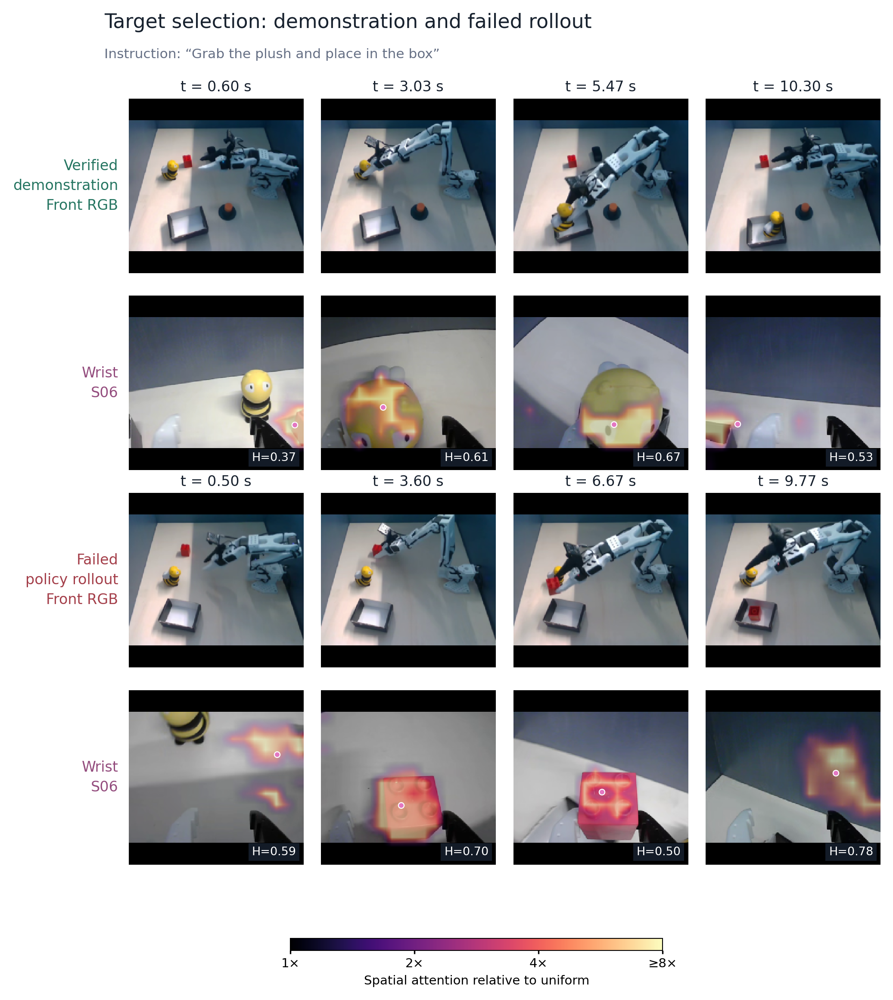
Recorded target-selection contrast: verified demonstration episode 50 and failed rollout episode 0. The instruction asks for the plush; the verified demonstration moves the plush toward the box, whereas the illustrated failed rollout transports the red cube. Each block shows front RGB above the spatial attention of the same wrist query S06. Frames were chosen by inspecting visible interactions, at the timestamps shown; they are not matched initial states. All maps use the same attention/uniform scale. This illustrates that query identity and language conditioning do not guarantee object-category-consistent spatial pooling. It does not establish that this query caused the wrong-object action. Demonstrations are recorded training examples, not closed-loop successes measured in this analysis.
M02_cube_slot_evolution · Slot attention during cube placement
PDF · PNG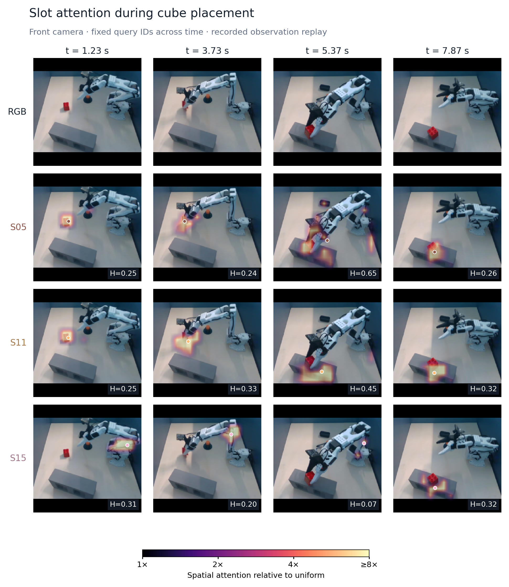
Temporal evolution in a verified cube-placement demonstration (episode 49). The top row shows RGB; subsequent rows show the same learned queries S05, S11 and S15 at four selected interaction stages. Query IDs and display scales remain fixed. Maps may overlap or shift between scene regions; no instance tracking or per-frame query reassignment is performed. H is normalized spatial entropy. This is offline replay of a recorded demonstration, not a policy success measured in this analysis.
M03_pooling_diversity · Concentrated, diffuse and overlapping pooling
PDF · PNG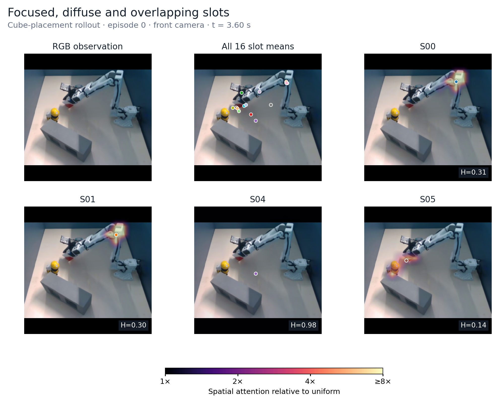
Illustrative spatial pooling patterns in one observation. S00 and S01 attend to similar robot regions, S04 is diffuse, and S05 is more concentrated. All 16 attention-weighted means are shown for context. The four slots were selected to expose overlap, diffusion and concentration, rather than as a random sample or evidence for object-instance segmentation. H is normalized spatial entropy. Full 16-slot coverage is provided in the appendix; black image padding remains visible and is included in all statistics.
M04_tool_slot_evolution · Slot attention during tool use
PDF · PNG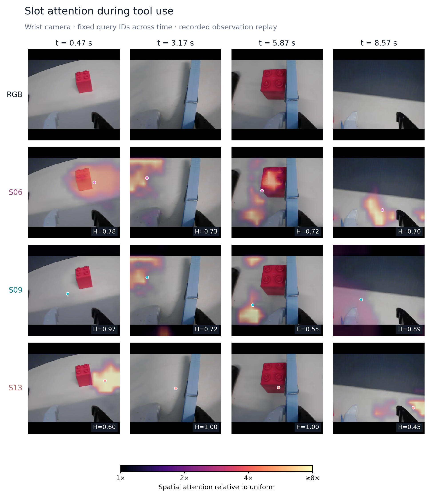
Alternative main-text temporal example from verified tool-use demonstration episode 149. The same wrist queries S06, S09 and S13 are shown while the visible scene changes from approach to tool/cube interaction and a late frame. In contrast to concentrated queries, S09 also reveals diffuse/background pooling. Full input padding is retained. These query IDs do not imply named object categories.
Appendix
A01_cube_spatial_language · Cube placement: spatial and language attention
PDF · PNG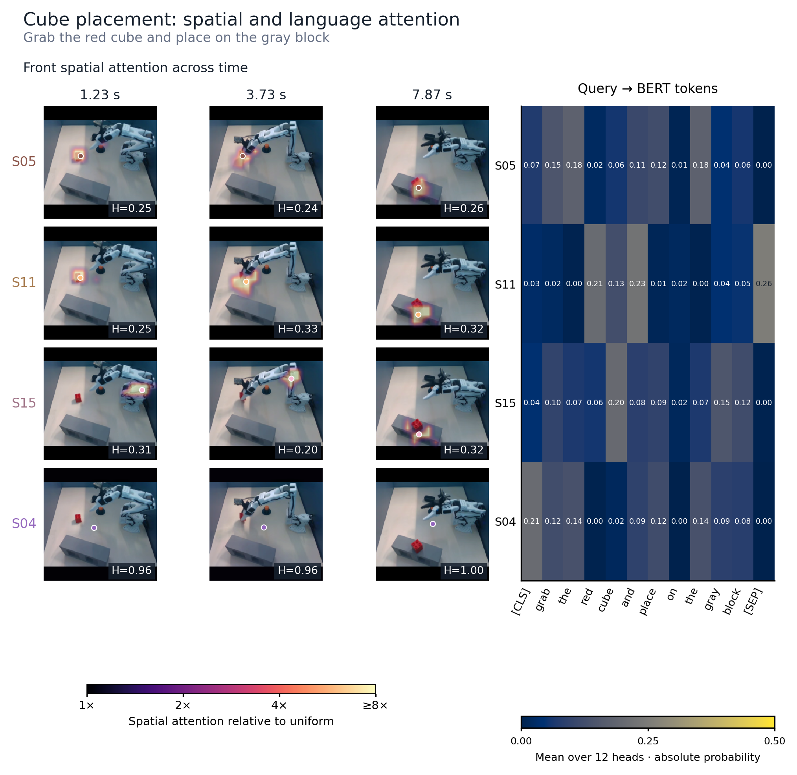
Spatial–language correspondence for front queries S05, S11, S15, S04. Rows align the same fixed query across three selected frames with its early-BERT attention distribution. All BERT tokens, including [CLS] and [SEP], are retained; values are absolute probabilities averaged over 12 heads, displayed on a common [0, 0.5] scale and rounded to two decimals. The spatial maps use a shared log attention/uniform scale. In this checkpoint the early-BERT query attention is computed before image pooling, so it is invariant across these frames for the same instruction and camera; it is shown once. A high weight on an object word is not evidence that the spatial map segments that object. Selection is illustrative, not an alignment-accuracy evaluation.
A02_failure_spatial_language · Wrong-object rollout: spatial and language attention
PDF · PNG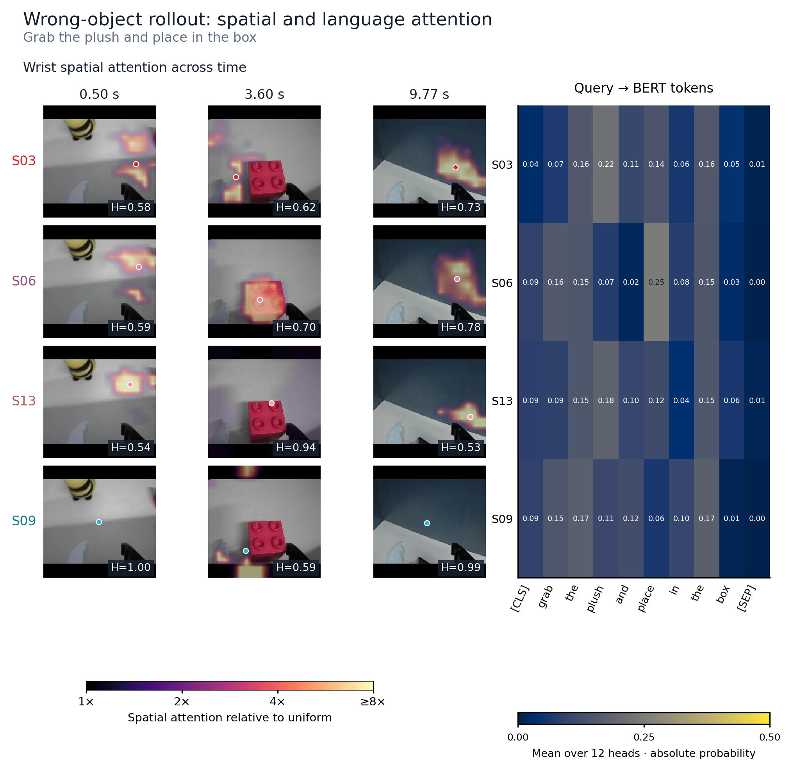
Spatial–language correspondence for wrist queries S03, S06, S13, S09. Rows align the same fixed query across three selected frames with its early-BERT attention distribution. All BERT tokens, including [CLS] and [SEP], are retained; values are absolute probabilities averaged over 12 heads, displayed on a common [0, 0.5] scale and rounded to two decimals. The spatial maps use a shared log attention/uniform scale. In this checkpoint the early-BERT query attention is computed before image pooling, so it is invariant across these frames for the same instruction and camera; it is shown once. A high weight on an object word is not evidence that the spatial map segments that object. Selection is illustrative, not an alignment-accuracy evaluation.
A03_tool_spatial_language · Tool use: spatial and language attention
PDF · PNG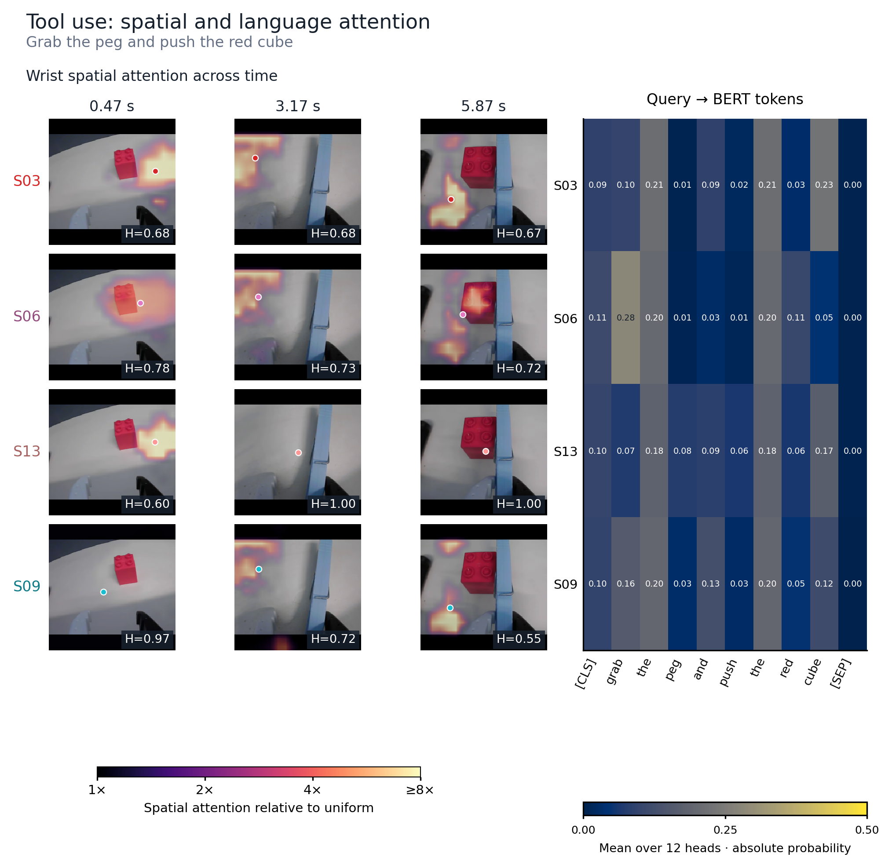
Spatial–language correspondence for wrist queries S03, S06, S13, S09. Rows align the same fixed query across three selected frames with its early-BERT attention distribution. All BERT tokens, including [CLS] and [SEP], are retained; values are absolute probabilities averaged over 12 heads, displayed on a common [0, 0.5] scale and rounded to two decimals. The spatial maps use a shared log attention/uniform scale. In this checkpoint the early-BERT query attention is computed before image pooling, so it is invariant across these frames for the same instruction and camera; it is shown once. A high weight on an object word is not evidence that the spatial map segments that object. Selection is illustrative, not an alignment-accuracy evaluation.
A04_all_query_word_maps · All query-to-word distributions
PDF · PNG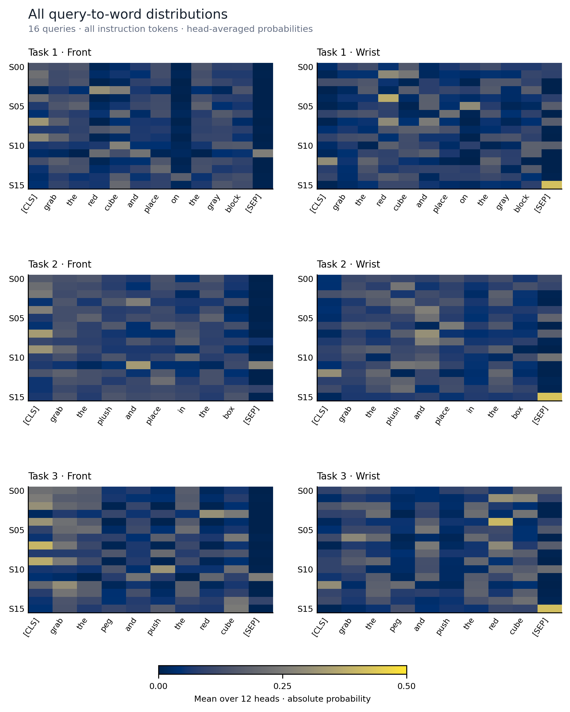
Complete early-BERT query-to-word attention for all 16 queries, three tasks and two cameras. Rows are query IDs and columns are the actual BERT tokens, including special tokens. Every panel uses the same absolute-probability color range. Poolers and early-BERT modules are separate across cameras; matching IDs across front and wrist do not imply matched semantic roles.
A05_all_slots_cube_front · Complete spatial attention atlas
PDF · PNG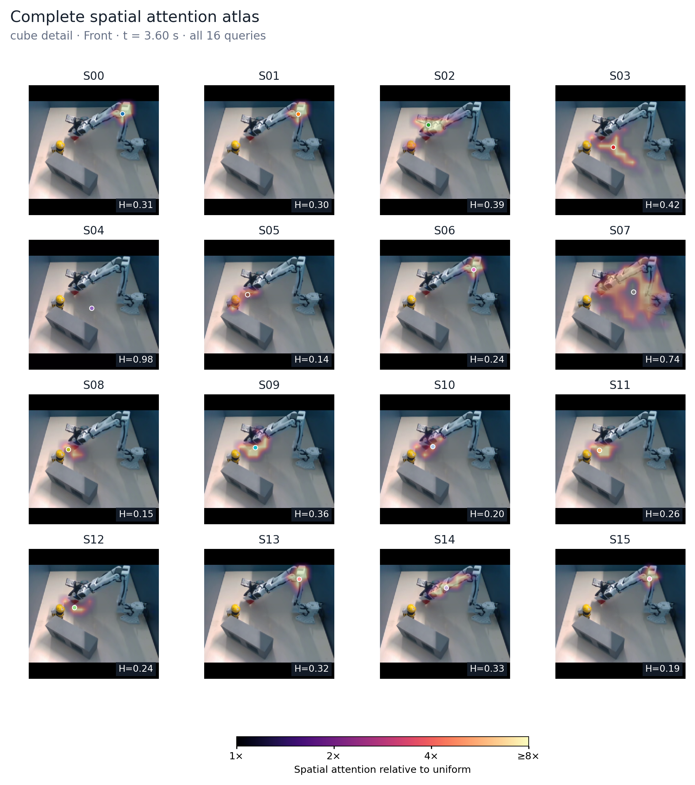
All 16 spatial attention maps for one selected observation, using the same RGB, interpolation and attention/uniform scale as the main figures. No query is omitted. H denotes normalized spatial entropy over all 256 patches, including the black padding. Query labels denote learned identities, not annotated object classes.
A06_all_slots_failure_wrist · Complete spatial attention atlas
PDF · PNG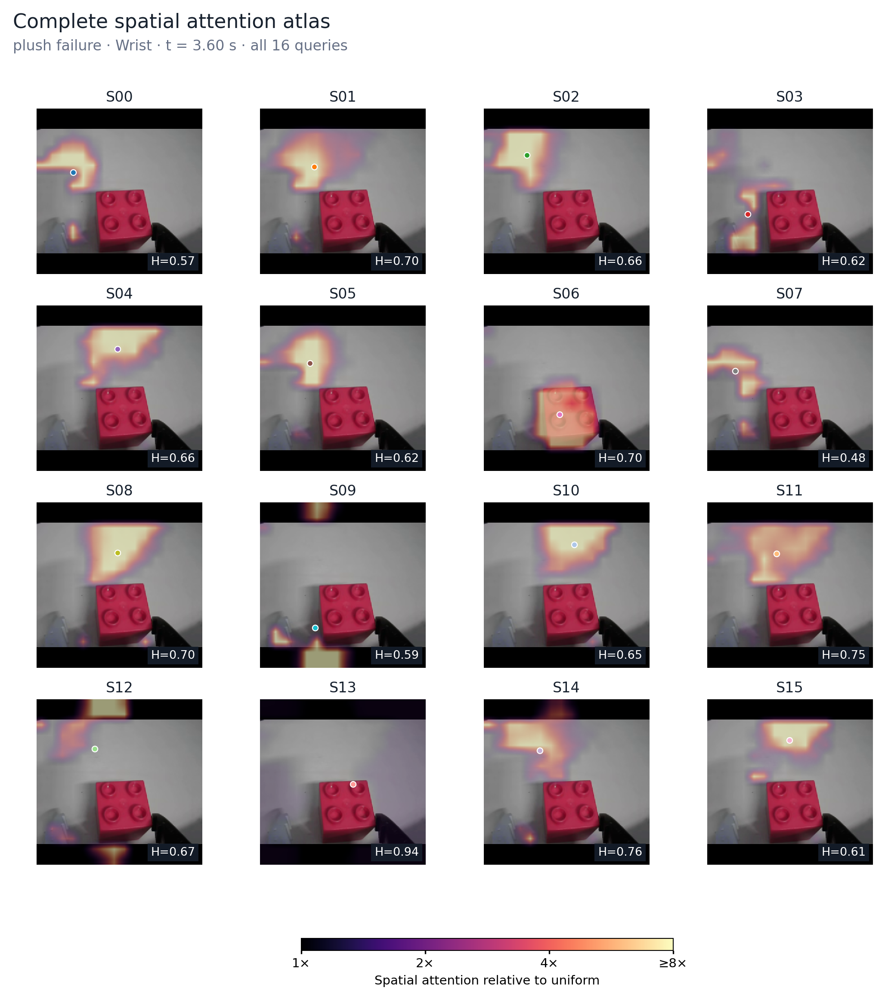
All 16 spatial attention maps for one selected observation, using the same RGB, interpolation and attention/uniform scale as the main figures. No query is omitted. H denotes normalized spatial entropy over all 256 patches, including the black padding. Query labels denote learned identities, not annotated object classes.
A07_tool_failure_evolution · Tool-task failure: fixed-query evolution
PDF · PNG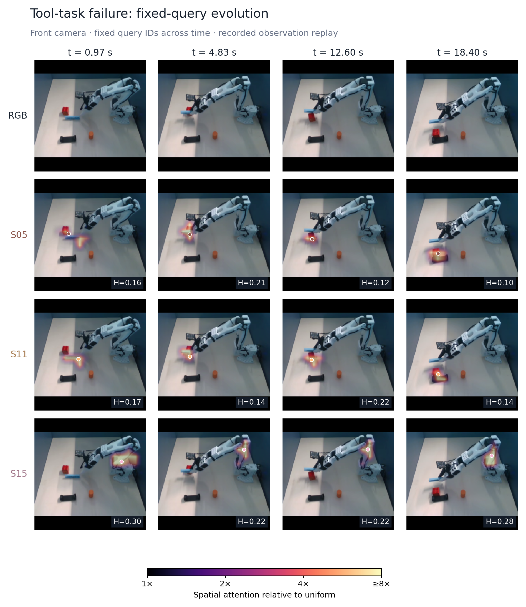
Temporal spatial pooling for selected front queries in recorded tool-task failure episode 0. This sequence supplements the verified tool-use example. Timestamps and scene configurations differ across episodes; the figure is illustrative and does not isolate outcome as an experimental variable.
A08_demo_spatial_language · Verified demonstration: spatial and language attention
PDF · PNG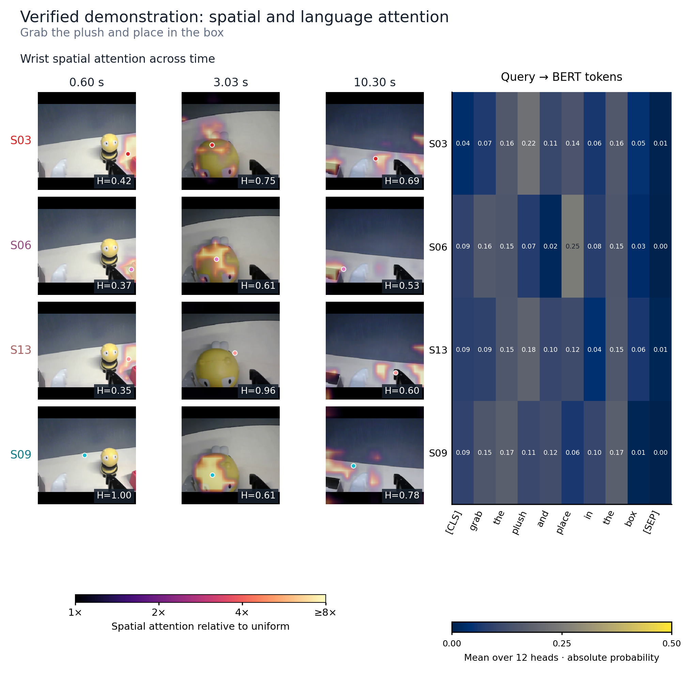
Spatial–language correspondence for wrist queries S03, S06, S13, S09. Rows align the same fixed query across three selected frames with its early-BERT attention distribution. All BERT tokens, including [CLS] and [SEP], are retained; values are absolute probabilities averaged over 12 heads, displayed on a common [0, 0.5] scale and rounded to two decimals. The spatial maps use a shared log attention/uniform scale. In this checkpoint the early-BERT query attention is computed before image pooling, so it is invariant across these frames for the same instruction and camera; it is shown once. A high weight on an object word is not evidence that the spatial map segments that object. Selection is illustrative, not an alignment-accuracy evaluation.